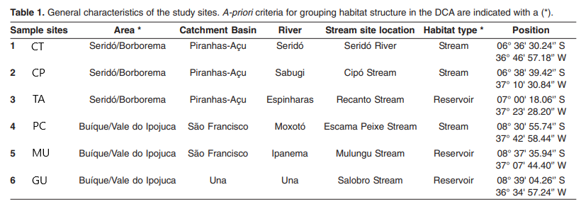
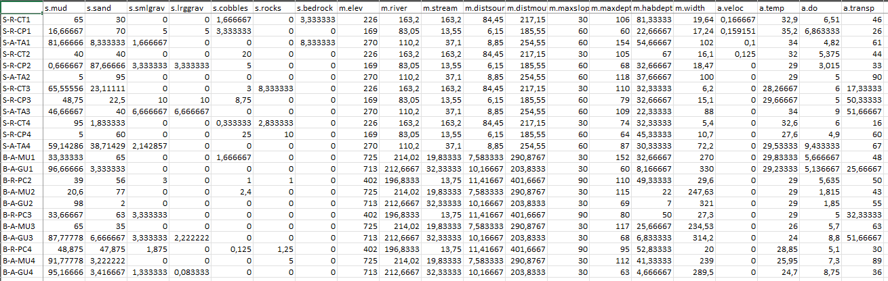
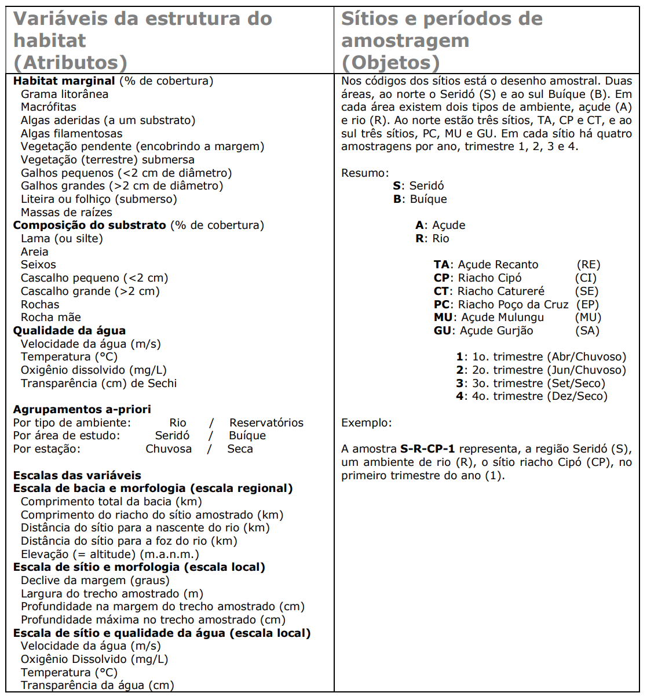
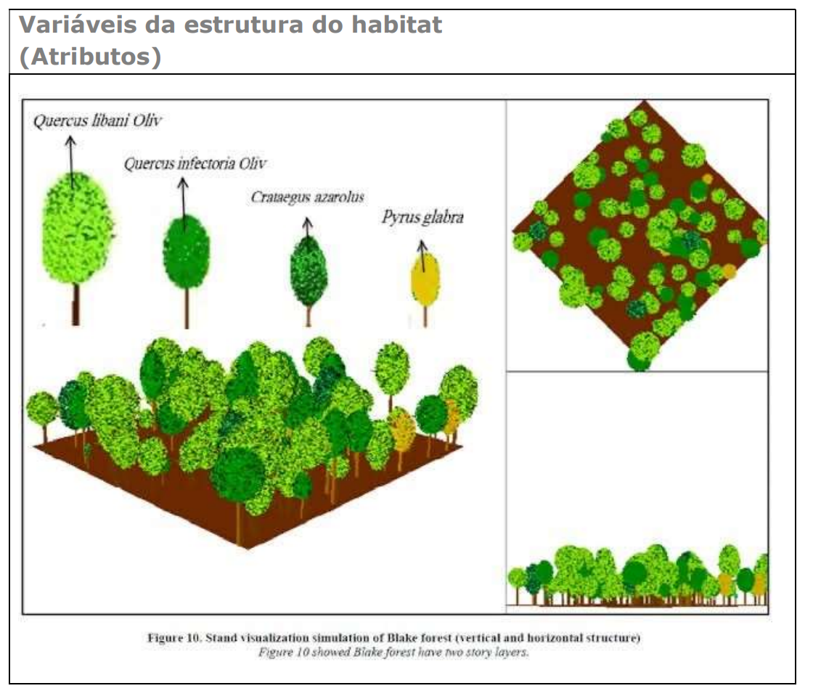
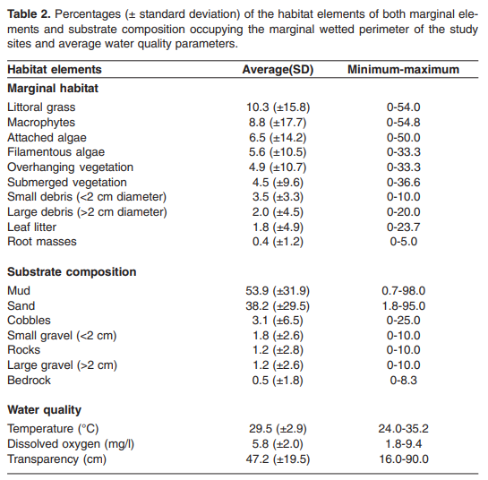
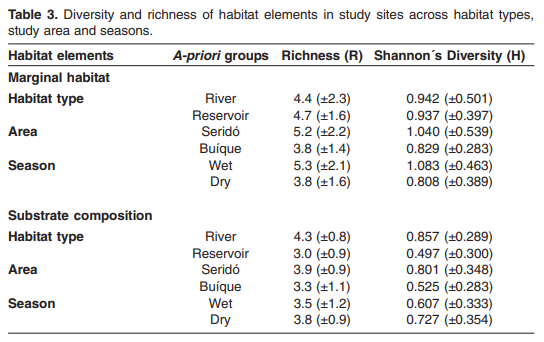
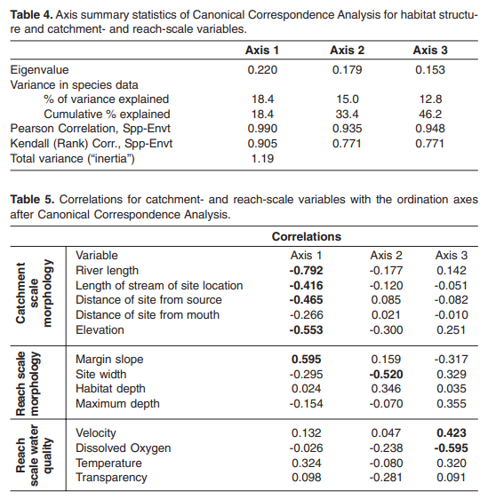
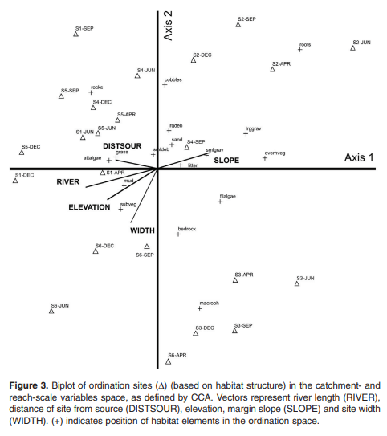

9 Base de dados II - Habitat
Apresentação
Exemplo de conjunto de dados ecológicos do Programa de Pesquisa em Biodiversidade (PPBio) do Semiárido. Ano de 2006. Estrutura do habitat10.
Autor:
- Prof. Elvio S. F. Medeiros
- Laboratório de Ecologia
- Universidade Estadual da Paraíba
- Campus V, João Pessoa, PB
Para entender a distribuição das espécies de peixes e seu uso de habitat, uma série de variáveis ambientais foram avaliadas como preditores da composição e riqueza da assembleia de peixes em sistemas aquáticos tropicais semiáridos. Nós pesquisamos a composição de elementos físicos, químicos e da estrutura do habitat associados a assembleias de peixes em sistemas aquáticos semiáridos e estabelecemos seu grau de associação. Os locais consistiam em trechos de riachos com fluxo de água superficial, poças temporárias isoladas e reservatórios artificiais (açudes). A amostragem de elementos do habitat foi feita associada a amostragem da comunidade de peixes e zooplâncton em quatro ocasiões durante as estações chuvosa (abril e junho de 2006) e seca (setembro e dezembro de 2006).
Texto modificado de MEDEIROS; SILVA; RAMOS (2008): Application of catchment- and local-scale variables for aquatic habitat characterization and assessment in the Brazilian semi-arid region. Neotropical Biology and Conservation, 2008, vol. 3, n. 1, p. 13-20. https://revistas.unisinos.br/index.php/neotropical/article/view/5440. Tradução: Google Translator.
Elvio Sergio Figueredo Medeiros1,4, Marcio Joaquim da Silva2, e Robson Tamar Costa Ramos1,3
1 Grupo Ecologia de Rios do Semiárido, Universidade Estadual da Paraíba, Depto. de Biologia. Campus V. CEP 58070-450 João Pessoa - PB. Brazil. 2 Universidade Federal do Rio Grande do Norte, Depto. de Biologia, Centro de Biociências, CEP 59078-900 – Natal - RN. 3 Laboratório de Sistemática e Morfologia de Peixes, Universidade Federal da Paraíba, Depto. de Sistemática e Ecologia, CCEN, CEP 58059-900, João Pessoa - PB.
- Autor correspondente: Dr. Elvio Medeiros https://orcid.org/0000-0002-7472-8147. Universidade Estadual da Paraíba, João Pessoa - Paraíba – Brasil - CEP 58.070-450. E-mail: elviomedeiros@servidor.uepb.edu.br
4Os autores agradecem a Telton Ramos e Virginia Diniz (UFPB) pela assistência em campo e ao CNPq/UEPB/DCR pela bolsa concedida a ESFM (350082/2006-5). Esta pesquisa contou com o apoio da UEPB/FAPESQ (68.0006/2006.0) e do Projeto de Pesquisa em Biodiversidade do Semiárido (PPBio Semi-Árido).
RESUMO
O estado do habitat físico é influenciado por fatores que atuam em diversas escalas, como a geomorfologia, o clima, o regime hidrológico, o uso da terra e a qualidade da água. Este trabalho quantifica a diversidade e a disponibilidade do habitat físico em sistemas aquáticos naturais e artificiais no semiárido do Brasil, com o objetivo de levantar variáveis físicas em escala local e de bacia de drenagem, e analisar sua importância na composição de uma estrutura básica para a caracterização e avaliação desses ambientes. Este estudo foi desenvolvido nas regiões de Seridó/Borborema e Buíque/Vale do Ipojuca. Estas áreas são consideradas de extrema importância biológica e são identificadas como prioritárias para a conservação da Caatinga. Os resultados mostram que o hábitat aquático no semiárido brasileiro é diverso e dinâmico, compreendendo um conjunto amplo de elementos disponíveis para a colonização pelos organismos. Os rios mostraram uma gama de elementos do hábitat marginal e da composição do substrato igual ou superior àquela dos reservatórios. Além disso, a composição do hábitat variou entre os dois tipos de ambiente estudados (rios/reservatórios) e com as estações do ano (seca/chuvosa). Os resultados apresentados têm implicações importantes para a conservação dos ambientes aquáticos do semiárido. Tendo em vista que o hábitat físico é a estrutura básica para a colonização por parte dos organismos aquáticos, os mecanismos potenciais que mantêm a biodiversidade aquática ocorrem nos vários níveis da bacia de drenagem. Portanto, é fundamental identificar os componentes, ao longo dos sistemas ripários, que são vitais na manutenção da sua integridade biológica.
Palavras-chave: rios intermitentes, reservatórios, conservação, composição de substratos
9.1 Introdução
Córregos intermitentes no semiárido brasileiro são características paisagísticas distintivas, existindo como cursos d’água secos durante a maior parte do ano. Maltchik e Medeiros (2006) reconheceram que os extremos de inundação e seca são impulsionadores de importantes processos que mantêm a diversidade dentro desses sistemas. Portanto, as medidas de conservação no semiárido brasileiro devem incluir a manutenção do regime de fluxo natural dos sistemas aquáticos, para garantir a sobrevivência das espécies em longo prazo (Maltchik e Medeiros, 2006). No entanto, as medidas de conservação também devem levar em conta a composição e diversidade do habitat aquático disponível, pois o habitat físico é o quadro de colonização pela fauna aquática (eg Martin-Smith, 1998). Além disso, o estado deste espaço vital influenciará a estrutura biótica e a organização dentro dos sistemas aquáticos (Mugodo et al., 2006). O estado do habitat físico, nomeadamente composição e diversidade, é influenciado por factores que operam a várias escalas espaciais e temporais (Boys e Thoms, 2006). Ao nível da bacia, a geomorfologia e o clima influenciarão o habitat à escala de alcance, afectando a hidrologia, sedimentação, aportes de nutrientes e morfologia do canal (Davies et al., 2000; Mugodo et al., 2006). No nível local, o uso e manejo da terra também influenciarão o habitat em escala de alcance do córrego (Richards et al., 1996).
Os métodos de avaliação do habitat físico disponíveis para os organismos aquáticos fornecem ferramentas importantes para vários aspectos da gestão e conservação do rio e, portanto, os procedimentos usados para avaliar o habitat devem ser ecologicamente e geomorfologicamente significativos (Thomson et al., 2001). Apesar disso, métodos de avaliação de habitats precisam ser desenvolvidos e testados em sistemas aquáticos semiáridos do Brasil, pois não são tão bem desenvolvidos quanto os métodos usados para avaliar outros aspectos da condição dos rios, como a qualidade da água. A avaliação do habitat é de grande utilidade para prever a distribuição potencial de espécies-chave, como peixes (Boys e Thoms, 2006) e invertebrados (Richards et al., 1997), com base em suas necessidades de habitat. Além disso, o habitat observado e potencial (ou previsto) pode ser comparado com os requisitos de habitat de uma espécie para avaliar a necessidade de manejo do habitat e a saúde geral do ecossistema com base nas necessidades da biota aquática (Maddock, 1999).
Este trabalho mede a diversidade e disponibilidade do habitat físico em sistemas aquáticos naturais e artificiais no nordeste do Brasil. Este artigo tem como objetivo levantar variáveis físicas em escala local e de captação e avaliar sua importância como marco básico para caracterização e avaliação de habitats aquáticos em duas áreas do semiárido brasileiro.
9.1.1 Desenho Amostral
Este estudo foi realizado na região semiárida brasileira, em bacias hidrográficas que fluem através de uma floresta aberta arbustiva seca decidual (a “Caatinga”). A amplitude térmica é baixa na área de estudo, com médias variando de aproximadamente 25 a 30 °C, e a precipitação média anual varia entre 600 e 1100 mm. As altitudes variam entre 100 e 1000 m (Figura 9.1 e Figura 9.2).

Figura 9.1: Área de estudo mostrando os estados do Rio Grande do Norte (RN), Paraíba (PB), Pernambuco (PE) e Alagoas (AL), principais sistemas fluviais e pontos de amostragem na região semiárida do Brasil. TA, açude Recanto; CP, riacho Cipó; CT, riacho Catureré; PC, riacho Poço da Cruz; MU, açude Mulungu e GU, açude Gurjão.
Duas regiões de importância biológica (Seridó, S e Buíque, B) foram escolhidas e nelas, seis locais ou sítios de coleta (TA, CP, CT, PC, MU, e GU) foram selecionados para representar ambientes Unidades Amostrais de ambientes temporários naturais e artificiais típicos (Figura 9.1 e Figura 9.4).
Os locais consistiam em trechos de riachos (-R) com fluxo de água superficial (durante a estação chuvosa) ou poças temporárias isoladas (durante a estação seca) e reservatórios ou açudes (-A) artificiais criados a partir do represamento de riachos. A amostragem foi realizada durante o ano de 2006 em quatro ocasiões durante as estações chuvosa (abril, 1 e junho, 2) e seca (setembro, 3 e dezembro, 4) (Figura 9.1 e Figura 9.4).

Figura 9.2: Características gerais dos locais de estudo. Os critérios a priori para agrupar a estrutura do habitat no DCA são indicados com um (*).
9.1.2 Sobre os dados do PPBio
A planilha ppbio contém os dados das variáveis ambientais em diferentes unidades amostrais (UA’s) (Figura 9.3) (Veja Programa de Pesquisa em Biodiversidade – PPBio). Essa é a matriz bruta de dados, porque os valores ainda não foram ajustados (não foram relativizados ou transformados). Outros tipos de arquivos existem para os dados do PPBio (7.2), que fazem parte de um estudo mais amplo sobre ecologia de rios do semiárido.

Figura 9.3: Parte da planilha de dados brutos do PPBio para o habitat.
9.2 Codificação para variáveis
Os arquivos da base de dados do projeto são fornecidos em formato Excel (.xlsx). Por exemplo, o arquivo ppbio06*-habitat.xlsx, traz os dados brutos que serão usados nas análises. A matriz de dados brutos contem mais de 20 localidades (n=linhas ou objetos) em estações do ano diferentes, e cerca de 30 variáveis ambientais (m=colunas ou atributos), antes de qualquer modificação. Portando é uma matriz bruta. Os valores incluem diversis tipos de variáveis medidas em unidades diferentes (%, °C, mg/L, etc), e apresentam uma alta amplitude de variação, portanto, a aplicação de uma transformação é recomendado (Figura 9.3). Nos nomes dos objetos e dos atributos são codificados de acordo com a tabela mostrada na Figura 9.4.

Figura 9.4: Codificação para as variáveis ambentais descritoras da estrutura do habitat (atributos) e os sítios e períodos de amostragem (objetos).

Figura 9.5: Imagem representativa da codificação das variáveis, para a medição da estrutura do habitat (atributos).
9.3 Área de estudo e amostragem dos dados
Este estudo foi realizado em duas áreas diferentes do semiárido brasileiro: Seridó/Borborema e Buíque/Vale do Ipojuca (conforme Tabarelli e Silva, 2003) (Tabela 1; Figura 1). Essas áreas são classificadas como de extrema importância biológica e foram identificadas como áreas prioritárias para conservação da biodiversidade na Caatinga por Silva et al. (2003), por apresentarem alta diversidade de espécies e serem ricas em endemismos. A área do Seridó está localizada no sul do Rio Grande do Norte (RN) e norte da Paraíba (PB) entre Patos e Caicó (Figura 9.1). A temperatura média anual é de 30,7°C, com máxima média mensal em outubro (31,0°C) e mínima média em fevereiro (29,3°C). A precipitação concentra-se entre janeiro e abril, com 350 a 800 mm por ano e média anual de 600 mm (Amorim et al., 2005). A altitude no Seridó varia entre 100 e 800 m (Governo do Estado da Paraíba, 1985). A área de Buíque está localizada no entorno da cidade de Buíque no centro de Pernambuco (PE) (Figura 9.1. A temperatura média anual e a precipitação são 25°C e 1095,9 mm, respectivamente. As chuvas concentram-se entre abril e junho. Altitude varia entre 800 e 1000 m (Rodal et al., 1998).
Dentro de cada área de estudo, três locais foram selecionados para representar ambientes típicos artificiais e naturais temporários e semipermanentes (Tabela 1). Os locais consistiam em trechos de córregos, geralmente de 100 a 500 m de comprimento, e reservatórios artificiais criados a partir de represamento de córregos. A amostragem foi realizada durante um ano em quatro ocasiões durante as estações chuvosa (abril e junho de 2006) e seca (setembro e dezembro de 2006). Variáveis de escala de alcance de captação e córrego foram selecionadas com base nas características locais e em Pusey et al. (2004) (entre outros, Richards et al., 1996; Davies et al., 2000; Thomson et al., 2001; Mugodo et al., 2006). As variáveis de escala de captação foram quantificadas com base nas características topográficas gerais da área de estudo e nas características da bacia hidrográfica usando mapas topográficos 1:500.000, imagens de satélite e receptor GPS. As variáveis do local em escala de alcance apresentam características morfométricas e de qualidade (físico-químicas) da água. A estrutura do habitat compreendeu (i) elementos marginais subaquáticos e litorâneos (representando a abundância de elementos marginais de microhabitat) e (ii) a composição do substrato.
A qualidade da água em escala de alcance, a estrutura do habitat e algumas das características morfométricas foram estimadas em pontos de levantamento de um metro quadrado e distribuídas em categorias. Normalmente, 3 a 12 pontos de pesquisa aleatórios foram avaliados dentro de cada trecho de rio ou reservatório. A composição do substrato e os elementos do habitat foram estimados como sua contribuição proporcional ao perímetro molhado do local. Para a avaliação da morfologia do local, a largura foi medida com fita métrica para distâncias de até 100 m e receptor de satélite GPS para distâncias maiores. A profundidade foi medida com um bastão a distâncias aproximadamente equivalentes ao longo de um transecto para representar a profundidade do habitat (profundidade média dos primeiros 3 m das margens) e a profundidade máxima. A velocidade da água foi medida usando o método de flutuação (Maitland, 1990). A inclinação da margem foi estimada visualmente e alocada em categorias de inclinação (< 30°, 30-60° e 60-90°). A temperatura da água (°C) e o oxigênio dissolvido (mg/l) foram medidos com um medidor de oxigênio (Lutron DO-5510), e a transparência (cm) foi medida com um disco Secchi.
9.4 Análises estatísticas
A variação na composição do habitat entre os locais e as ocasiões de amostragem foi investigada usando a Análise de Corresponência Destendida (DCA) dos dados padronizados transformados em arcsine-squareroot. O Multi-Response Permutation Procedure (MRPP) (Biondini et al., 1985; McCune e Grace, 2002) foi usado para testar diferenças na composição de habitats entre as duas áreas de estudo (Seridó e Buíque), tipos de habitats (córrego e reservatório) e estações do ano (chuvoso e seco). Para todas as análises de MRPP, a concordância dentro do grupo corrigida pela chance (A) é apresentada como uma medida do grau de homogeneidade dentro do grupo, em comparação com a expectativa aleatória. Onde o MRPP detectou diferenças significativas, uma análise adicional foi realizada para revelar quais elementos particulares do habitat contribuíram significativamente como a fonte da diferença na composição do habitat, usando a Análise de Espécies Indicadoras de McCune e Mefford (1999). Os Valores Indicadores (IV) foram calculados pelo método de Dufrene e Legendre (1997). Estes foram testados para significância estatística (p<0,05) usando uma técnica de Monte Carlo com 1000 corridas. A influência das variáveis de alcance e escala de captação na estrutura do habitat foi avaliada usando a Análise de Correspondência Canônica (CCA) seguindo McCune e Grace (2002). Os dados foram centralizados e normalizados e testados com randomização de Monte Carlo (100 corridas). Todas as estatísticas foram realizadas em PC-ORD 4.27 (McCune e Mefford, 1999).
9.5 Resultados
A estrutura do habitat para todos os locais de estudo consistiu geralmente em plantas C4 crescendo nas margens do litoral (nomeadamente gramíneas), macrófitas aquáticas, incluindo plantas flutuantes (geralmente Salvinia sp., Pistia sp. e Azolla sp.), plantas emergentes (Nymphaea spp.) e plantas submersas (Ceratophyllum sp. e Egeria sp.) e algas (aderidas ao substrato e filamentosas) (Figura 9.6). Vegetação ciliar pendendo, restos lenhosos, serapilheira e massas de raízes também estiveram presentes nos locais estudados.

Figura 9.6: Percentagens (± desvio padrão) dos elementos do habitat de ambos os elementos marginais e composição do substrato que ocupam o perímetro molhado marginal dos locais de estudo e parâmetros médios de qualidade da água.
A composição do substrato foi composta principalmente de lama e areia, com menor contribuição de seixos, pedras e cascalho (Figura 9.6). A diversidade de estruturas de habitat foi geralmente maior nos locais dos rios, na área do Seridó e durante a estação chuvosa, apesar de uma maior riqueza de elementos de habitat nos locais dos reservatórios (Figura 9.7). A composição do substrato também foi mais diversa e rica nos locais do rio e na área do Seridó, enquanto o substrato foi mais rico e diversificado durante a estação seca (Figura 9.7). A análise de correspondência sem tendência (Figura 9.8) mostrou que as diferenças na estrutura do habitat foram significativas apenas entre os locais de riachos e reservatórios (MRPP, A = 0,06, p = 0,03) e estações (MRPP, A = 0,06, p = 0,03).

Figura 9.7: Diversidade e riqueza de elementos do habitat em locais de estudo em todos os tipos de habitat, área de estudo e estações do ano.
Diferenças na estrutura do habitat entre as duas áreas de estudo não foram significativas (MRPP, A = 0,01, p = 0,26). A análise do valor indicador mostrou que os elementos importantes que separam esses grupos foram macrófitas para reservatórios (IV = 53,2, p = 0,01) e areia e pedras para locais fluviais (IV = 61,8, p = 0,02 e IV = 82,6, p = 0,002, respectivamente). Importantes características de habitat que separam as estações foram vegetação submersa (IV = 48,4, 0,01) e vegetação pendente (IV = 48,9, p = 0,02) para a estação chuvosa. Nenhum elemento do substrato foi significativamente importante na separação dos locais de acordo com as estações do ano (Figura 9.8).
![Resultados da DCA para a composição do habitat nos locais de estudo. A caixa de inserção mostra elementos de habitat correlacionados (r2>0,2) com locais/ocasiões de amostragem no espaço de ordenação (indicados por vetores). A direção e o comprimento dos vetores indicam a força da correlação. Consulte a Tabela 2 para obter os nomes completos dos elementos do habitat. Os locais (S1-S6) são codificados de acordo com a Tabela 1 e a ocasião da amostragem. Abreviaturas: APR, abril; JUN, junho; SET, setembro; DEZ, dezembro.](imagens/bases/hab4.png)
Figura 9.8: Resultados da DCA para a composição do habitat nos locais de estudo. A caixa de inserção mostra elementos de habitat correlacionados (r2>0,2) com locais/ocasiões de amostragem no espaço de ordenação (indicados por vetores). A direção e o comprimento dos vetores indicam a força da correlação. Consulte a Tabela 2 para obter os nomes completos dos elementos do habitat. Os locais (S1-S6) são codificados de acordo com a Tabela 1 e a ocasião da amostragem. Abreviaturas: APR, abril; JUN, junho; SET, setembro; DEZ, dezembro.
A análise de correspondência canônica mostrou que as variáveis de alcance e escala de captação não estavam fortemente correlacionadas, exceto para a distância do local à nascente do rio e comprimento do córrego da localização do local (correlação de Pearson = 0,965), elevação e comprimento do rio principal (Correlação de Pearson = 0,853) e elevação e largura do local (correlação de Pearson = 0,906). A variância total dos dados (“inércia”) foi de 1,19. A variância total explicada pela CCA foi de 46,2%, sendo a maior parte dessa variação explicada pelo primeiro eixo (18,4%) (Figura 9.9. No entanto, os eixos 2 e 3 não podem ser desconsiderados, pois também explicaram parte substancial da variação do conjunto de dados. Os resultados da análise mostram uma relação significativa entre os dados de estrutura do habitat e as variáveis de alcance e escala de captação, com o autovalor do primeiro eixo muito alto para ser esperado por acaso (Figura 9.9, valores de p para autovalor e correlação para o primeiro eixo = 0,01). O primeiro eixo foi fortemente correlacionado com variáveis morfológicas da escala de captação, nomeadamente comprimento do rio principal, elevação e a distância altamente correlacionada do local à nascente do rio e comprimento do córrego da localização do local. O primeiro eixo também foi correlacionado com a inclinação da margem, uma variável morfológica da escala de alcance. Eixos 2 e 3 foram correlacionados com variáveis de escala de alcance de morfologia (largura do local, eixo 2) e qualidade da água (velocidade da água e oxigênio dissolvido, eixo 3) (Figura 9.9).

Figura 9.9: Estatísticas de sumário dos eixos da Análise de Correspondência Canônica para a estrutura do habitat e variáveis de escala de captação e alcance. Correlações para variáveis de escala de captação e alcance com os eixos de ordenação após Análise de Correspondência Canônica.
A Figura 9.10 indica que o eixo 1 representa um gradiente de sítios com estrutura de habitat influenciada por variáveis de escala de captação e o eixo 2 representa sítios influenciados por variáveis de escala de alcance.

Figura 9.10: Biplot de locais de ordenação (Δ) (com base na estrutura do habitat) na bacia e alcance- variáveis de escala espaço, conforme definido pelo CCA. Os vetores representam o comprimento do rio (RIVER), distância do local da fonte (DISTSOUR), elevação, inclinação da margem (SLOPE) e largura do local (WIDTH). (+) indica a posição dos elementos do habitat no espaço de ordenação.
9.6 Discussão
O presente estudo mostrou que o habitat aquático no semiárido brasileiro é diversificado e dinâmico, com uma gama de elementos de habitat disponíveis para colonização pela biota aquática. Sítios de riachos apresentaram uma composição de substrato e elementos de habitats marginais semelhante a maior quando comparados a reservatórios, e a composição do habitat variou com o tipo de habitat (rio/reservatório) e estações (seco/úmido). Mudanças sazonais nas características físicas de ambientes variáveis foram relatadas para regiões secas em outros lugares es (Mackey, 1991; Davis et al., 2002). Essas mudanças geralmente estão associadas a flutuações nos níveis de água e morfologia do habitat (Osborne et al., 1987; Medeiros, 2005). No presente estudo, as variações sazonais do nível da água e do regime hidrológico influenciaram a morfometria e a estrutura do habitat dos locais de estudo. Dadas as características lóticas dos locais de riachos, areia e seixos foram as características de habitat mais importantes neste tipo de habitat, pois espera-se que substratos finos como lama sejam realizados durante as inundações. A Figura 2 também dá indicação de que rochas, cascalho e algas anexadas eram elementos importantes de habitat em locais de riachos. Já os reservatórios foram caracterizados principalmente pela presença de macrófitas, vegetação submersa e, em menor grau, lama. O fato de as macrófitas aquáticas não terem sido elementos importantes na definição de habitat nos córregos intermitentes estudados está relacionado aos extremos de inundação durante o período úmido. Maltchik e Pedro (2001) e Pedro et al. (2006) constataram que a inundação limitou a ocorrência de macrófitas aquáticas em riachos no semiárido brasileiro, onde as comunidades de macrófitas aquáticas sujeitas a inundação apresentaram menor riqueza de espécies do que as comunidades sem inundações. Os ciclos secos e úmidos em riachos semiáridos do nordeste do Brasil são caracterizados por extremos de inundações e secas e considerados como os mais importantes impulsionadores da estrutura da comunidade nesses sistemas (Maltchik e Medeiros, 2001; Maltchik e Florin, 2002). Os resultados do presente estudo mostram que os ciclos seco e úmido também desempenham um papel importante na estrutura do habitat, uma vez que a composição do habitat marginal e do substrato foram diferentes entre as estações. Curiosamente, o habitat marginal foi mais diverso durante a estação chuvosa do que durante a estação seca. Esse resultado discorda de outros estudos sobre estrutura de habitat em sistemas temporários ou semipermanentes (por exemplo, Kennard, 1995; Medeiros, 2005), que constataram que a riqueza e a diversidade de estruturas de habitat foram maiores durante a estação seca, quando a água recua níveis provocam a exposição de estruturas físicas anteriormente submersas, como galhos e troncos. Os dados apresentados neste estudo indicam um efeito oposto, pois a vegetação submersa e a vegetação pendente foram elementos característicos do habitat durante a estação chuvosa. Dado o aumento da área dos sistemas aquáticos durante o período úmido, a vegetação que outrora ocupou as margens secas do litoral de rios e reservatórios é inundada, agregando ainda mais complexidade ao habitat. Além disso, à medida que os riachos inundados atingem suas margens, o contato com a vegetação ciliar atinge seu máximo, aumentando ainda mais a complexidade do habitat (por exemplo, Pusey e Arthington, 2003). Como indicado pela alta importância da vegetação pendente durante a estação chuvosa, proximidade com a vegetação ciliar gera sombra, limitando o crescimento de macrófitas, mas acrescenta elementos ao habitat litorâneo como massas de raízes, serrapilheira e detritos. A composição do substrato, por outro lado, é mais provável de ser descoberta durante a estação seca, mais importante ainda nos riachos intermitentes, onde características como pedras e cascalho tendem a ser mais frequentes em trechos mais profundos.
Apesar das diferenças na diversidade e riqueza de elementos de habitat entre Seridó e Buíque, a estrutura de habitat não foi diferente entre as duas áreas de estudo. Como o desenho amostral não é equilibrado (dois reservatórios na área do Buíque e apenas um na área do Seridó), a diversidade e a riqueza de elementos do habitat tendem a ser maiores no Seridó, devido à dominância de sites do tipo riacho nessa região. Pensa-se que os sistemas lóticos são organizados como uma hierarquia aninhada, tanto temporal quanto espacialmente (Johnson et al., 1995; Poff, 1997). Em uma hierarquia aninhada, processos de grande escala, como clima e geomorfologia, definem níveis mais altos de organização dos aspectos físicos e biológicos (por exemplo, morfologia do rio, regime de fluxo, pool de espécies) do ecossistema fluvial (Johnson et al., 1995). Esses níveis mais altos de organização influenciam fatores físicos e biológicos em uma variedade de escalas espaciais e temporais mais baixas, que podem ser particularmente relevantes para sistemas semiáridos (Poff, 1997; Maltchik e Medeiros, 2006). Portanto, em escalas temporais e espaciais relativamente curtas (ou seja, durante as estações secas e úmidas e através de bacias hidrográficas ou trechos de rios), vários fatores podem influenciar as variações no habitat físico disponível para os colonizadores.
No contexto do presente estudo, a Análise de Correspondência Canônica identificou vários níveis de variáveis de captação e alcance de riachos correlacionados com a estrutura do habitat. Ao nível da bacia, as variáveis que representam a ordem do riacho, como comprimento do rio, comprimento do córrego da localização do local e distância do local da fonte, foram importantes determinantes da estrutura do habitat. Na escala de alcance do córrego, a estrutura do habitat foi relacionada com a inclinação da margem e a largura do local, enquanto a profundidade não foi um determinante importante da estrutura do habitat. Como todas as variáveis de habitat foram medidas nas margens, não se deve esperar que a profundidade geral do local seja um elemento importante que afete a estrutura do habitat (a profundidade média foi de 34,4 ± 19,4 cm). Entretanto, a inclinação e a largura podem afetar o habitat físico através de sua influência no grau de conectividade entre o habitat aquático e terrestre. É importante lembrar que a declividade foi medida nas margens, compreendendo a porção terrestre das margens. Os parâmetros de qualidade da água em escala local também foram considerados importantes descritores da estrutura do habitat, principalmente aqueles associados ao conteúdo de oxigênio dissolvido na água (nomeadamente, oxigênio dissolvido e velocidade da água). Embora a temperatura e a transparência também possam estar relacionadas ao oxigênio dissolvido, a primeira foi relativamente constante em todos os locais de estudo (a temperatura média da água foi de 29,5 ± 2,9 °C) e a última (estimada a partir das profundidades de Secchi) foi muito alta em todas as áreas de estudo. como com médias por local variando de 16 a 90 cm. O modelo de habitat foi sugerido como uma estrutura onde fatores bióticos influenciam a biota (Southwood, 1977). Em ecossistemas de riachos, a inundação e a variabilidade do fluxo têm sido sugeridas como os principais eixos no modelo de habitat (Minshall, 1988; Poff e Ward, 1989). Embora os resultados apresentados neste estudo indiquem que as variações sazonais associadas ao regime de inundação e fluxo são elementos importantes que afetam a estrutura do habitat, há indícios de que o modelo de habitat pode ser multidimensional. Nos sistemas semiáridos do Brasil, a estrutura do habitat está sendo impulsionada por muitos componentes em diferentes níveis, onde o papel das características de captação e morfologia local e variáveis de água aumentariam em predominância em suas respectivas escalas. Isto realça a importância da ligação entre a estrutura do habitat e a diversidade biótica a nível local e regional.
O presente estudo mostra que a estrutura do habitat em sistemas semiáridos no nordeste do Brasil é composta por uma gama de elementos que variam de acordo com o tipo de habitat e estação do ano, enquanto a heterogeneidade do habitat foi mais forte nas escalas local e de captação do que entre áreas de captação. Portanto, vários níveis da hierarquia de captação são importantes para a estrutura do habitat, desde variáveis de escala de captação, como tamanho e elevação do rio, até características locais, como largura, inclinação e oxigênio dissolvido na água. Tais feições devem ser avaliadas e utilizadas como uma estrutura básica para caracterização e avaliação de habitats aquáticos no semiárido brasileiro. Os resultados apresentados têm implicações para a conservação e manejo dos sistemas semiáridos brasileiros. Dado que o habitat é a estrutura básica para a colonização de organismos aquáticos, os mecanismos potenciais que mantêm a diversidade biótica estão em todos os níveis da bacia hidrográfica. É fundamental, portanto, identificar as partes dos ecossistemas ribeirinhos que são vitais para a manutenção de sua saúde.